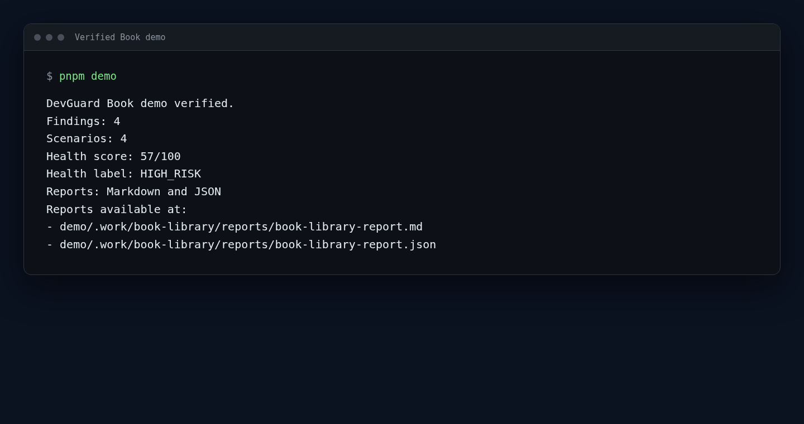
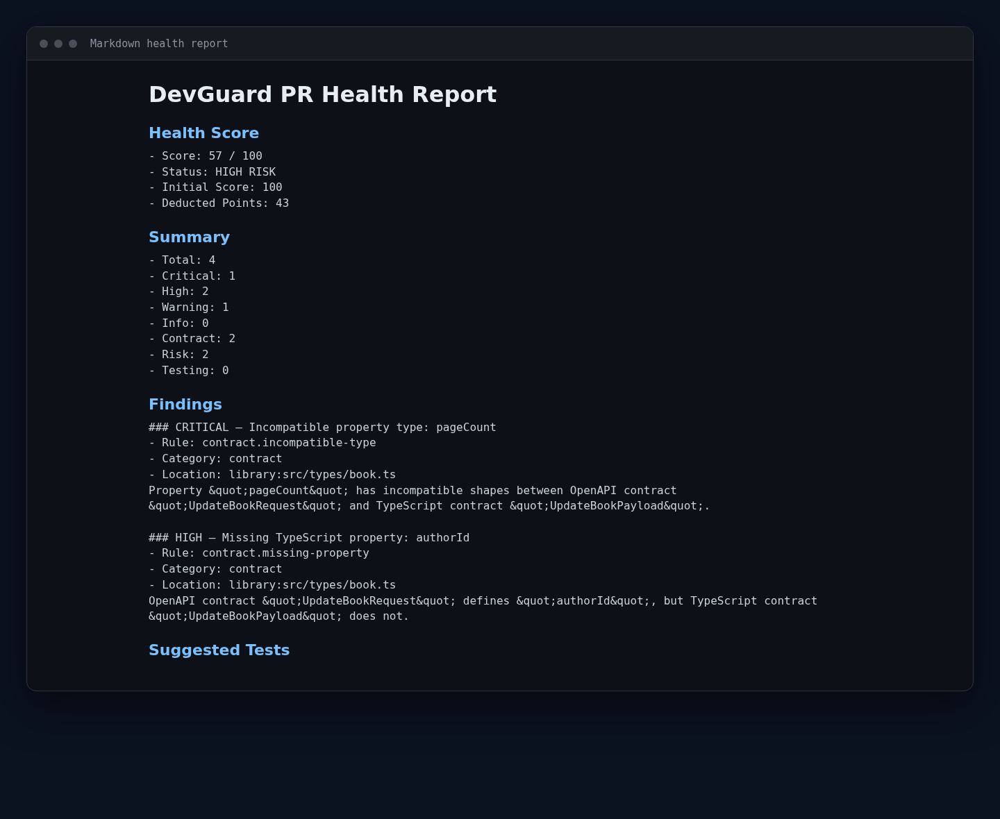
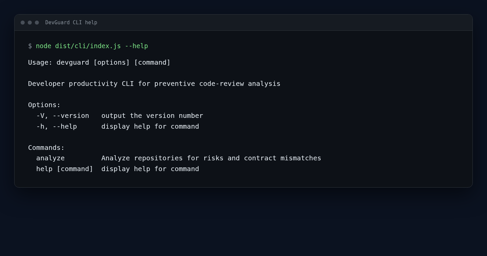
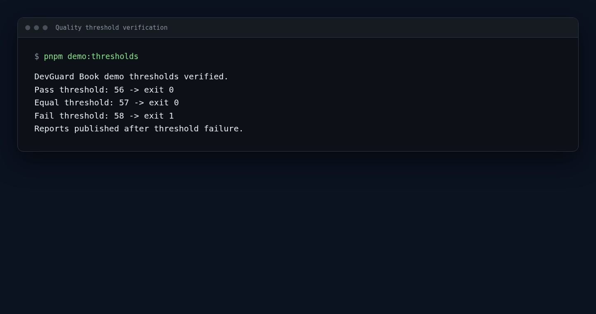

Contract Drift
Backend OpenAPI schemas and frontend TypeScript types evolve independently, increasing the risk of runtime integration defects.
LOCAL-FIRST DEVELOPER TOOL
A deterministic, offline-capable CLI that compares OpenAPI and TypeScript contracts, analyzes local Git change risks, and calculates repository health. No LLM required.

WHY DEVGUARD
Backend OpenAPI schemas and frontend TypeScript types evolve independently, increasing the risk of runtime integration defects.
Configuration, policy, and other sensitive files may change without enough review or test context.
Production code may change without corresponding test-file changes or configured evidence.
HOW IT WORKS
.devguard.yml
VERIFIED BOOK RESULT
The fictional Book case identifies pageCount as OpenAPI integer versus
TypeScript string, a required authorId absent from TypeScript, a sensitive
config/access-policy.json change, and a service change without expected
related-test evidence.
contract.incompatible-type contract.missing-property
risk.sensitive-file-change risk.missing-related-tests


QUALITY POLICY
After a successful analysis, DevGuard publishes reports before evaluating
--fail-below. A missed threshold returns exit code 1, allowing external
automation or CI jobs to enforce a quality policy.
56 passes with exit 057 passes with exit 058 returns exit 1 after report publicationdevguard analyze local --config .devguard.yml --fail-below 56
devguard analyze local --config .devguard.yml --fail-below 57
devguard analyze local --config .devguard.yml --fail-below 58
REPOSITORY WORKFLOW
Run the verified demo directly from the repository without globally installing DevGuard.
git clone https://github.com/ZarakiLancelot/devguard.git
cd devguard
corepack enable
pnpm install
pnpm build
pnpm demoFor repository-local direct CLI execution:
node dist/cli/index.js analyze local --config .devguard.ymlCURRENT SCOPE
{kind=link}
{kind=link}
{kind=link}